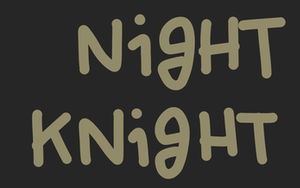

A simple white noise app for sleep. Generated, never looped.
Generated, not looped
Noise is synthesised in real time, so there are no audible loops and no large audio files eating your storage.
Tone slider
Dial in the sound from a soft hush to a brighter hiss with a single low-pass tone control.
Sleep timer
Tap to cycle through 15, 30, 45, 60, and 90 minute presets. Audio fades out gently at the end.
Auto-resume
Keeps playing in the background and picks back up automatically after a call, Siri, or alarm snooze.
Lock-screen controls
Play, pause, and scrub from your lock screen, AirPods, or Control Center — exactly where you'd expect.
No tracking
No accounts, no analytics, no ads. The app does one thing and gets out of the way.